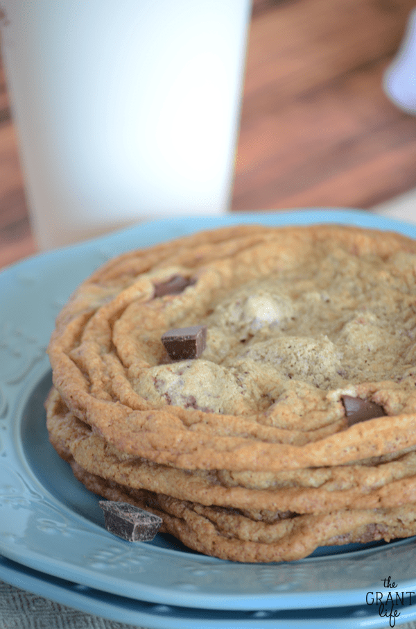

Starbucks Cookie
Ingredients
- 2 sticks of unsalted butter, softened
- 1 cup of sugar
- 1 cup of brown sugar
- 2 eggs
- 1 teaspoon vanilla
- 1 cup whole wheat flour
- 1 cup all purpose flour
- 1 teaspoon baking soda
- 1 teaspoon baking powder
- 1 cup dark chocolate chunks
- 1 cup semi-sweet milk chocolate chips
Preparation
- Preheat oven to 350.
-
Cream the butter and the two sugars together until light and fluffy.
- Add in the vanilla and the eggs, one at a time.
-
Mix together all the dry ingredients - both flours, baking soda and
baking powder.
- Add the dry ingredients to the wet ingredients and mix well.
- Add in both chocolate chips and stir until combined.
-
Drop 1/3 cup spoonfuls of dough on a silicone baking sheet and bake for
10-12 minutes, or until the edges are golden brown.
- Remove from oven and place on a wire rack to cool.
- Bon Appetit!